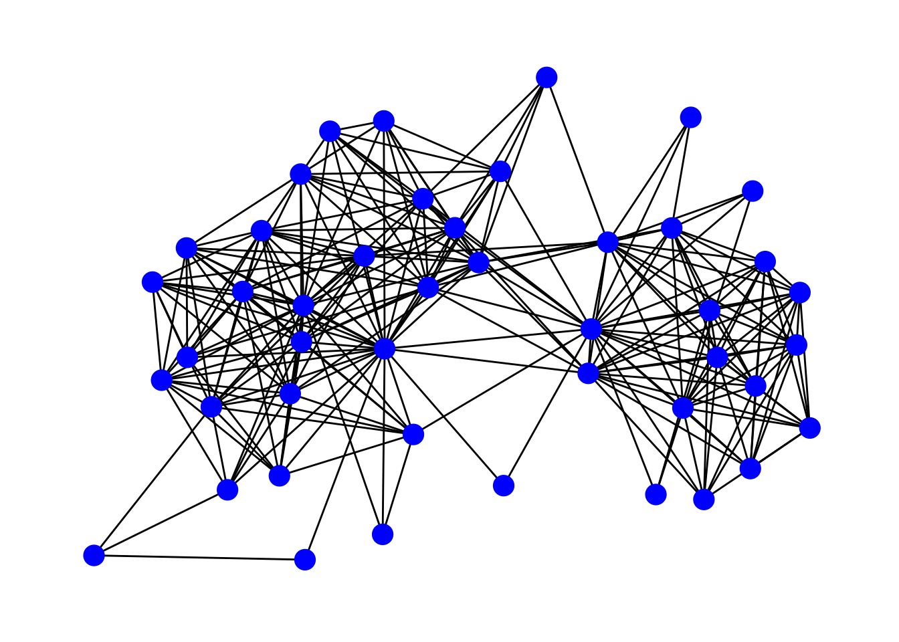
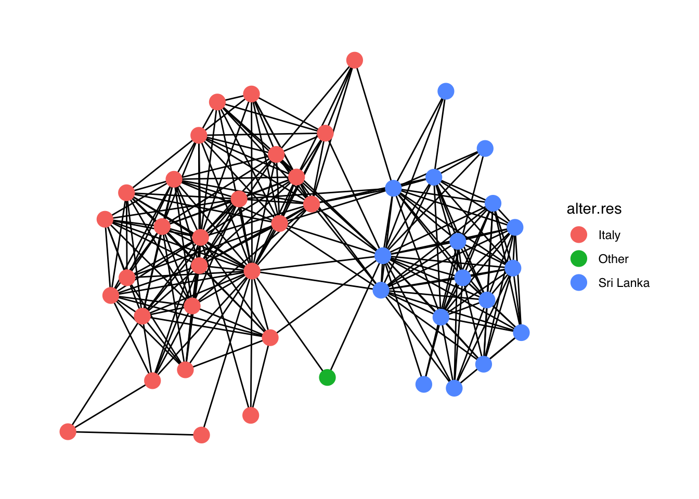
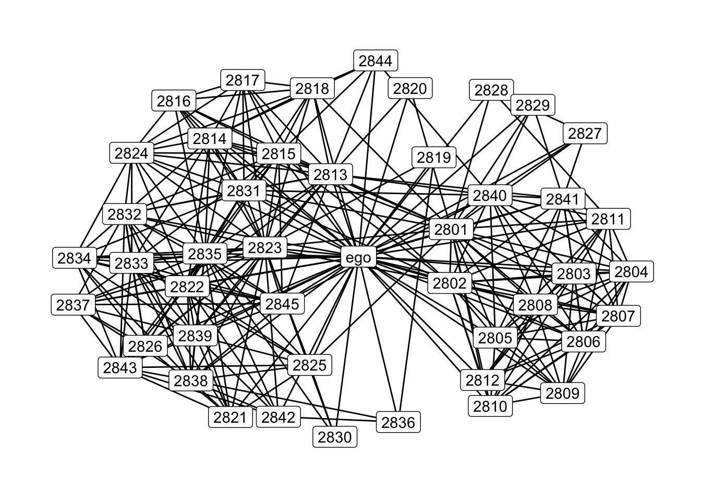

Chapter 3 Representing and visualizing ego-networks
3.1 Overview
After learning some basics of the R language, we now focus on R tools for egocentric network data. To make things simpler, we’ll start by considering just one egocentric network. The following chapters will show you how to replicate the same type of analysis on many ego-networks at once.
This chapter covers the following topics:
- Representing ego-level attribute data and alter-level attribute data in R.
- Joining (merging) ego-level and alter-level data frames.
- Representing alter-alter tie data.
- Representing and manipulating an ego-network as an
igraphobject. - Visualizing an ego-network.
3.2 Ego-level and alter-level data
- In this section we use the data objects described earlier in Section 1.4. All these objects are stored in the
data.rdafile. In sections 7.1 and 8.2 we’ll show how to create these objects from raw (csv) data usingegorandtidyverse. - Egocentric network data typically include at least three types of data:
- Ego-level attribute data. This is a dataset with attributes of egos. Each row is an ego (typically, a survey respondent) and each column is a characteristic of the ego. Following multilevel modeling terminology, we call this “level 2” because, in the multilevel structure of ego-network data, egos are the higher-level “groups” in which alters are clustered. In personal network surveys, these data are obtained from standard survey questions asking individual information about the respondent.
- Alter-level attribute data. This is a dataset with attributes of alters and of ego-alter ties. It is also the dataset that, for each alter, indicates who is the ego who nominated that alter: that is, it lists all the ego-alter ties. In this dataset, each row is an alter and each column is a characteristic of the alter, or of the relationship between the alter and the ego who nominated him/her. Following multilevel modeling terminology, we call this “level 1” because alters are the most granular units in the data, clustered within egos. In personal network surveys, these data are obtained from the so-called name generator questions, which elicit lists of alters from each ego; and from the name interpreter questions, which elicit characteristics of each alter.
- Alter-alter tie data. These are the data about alter-alter ties as reported by the ego. In personal network surveys, these data are obtained from so-called edge interpreter questions.
- File formats:
- Ego-level attribute data. This is normally a single dataset (in a single file), with each row representing one ego, and different columns representing different ego-level attributes. This is similar to any respondent-level dataset you have in standard survey data.
- Alter-level attribute data. Depending on the data collection software, you might have a single dataset (in a single file) including alters nominated by all egos; or separate datasets (in separate files), one for each ego, with the alters nominated by that ego (and with the same variables in all datasets).
- Alter-alter tie data. These are typically in edge list format or in adjacency matrix format, depending on the data collection software. If the tie data are in adjacency matrices, you normally have a separate adjacency matrix for each ego, in a separate file. If they are in edge lists, you might have a single edge list including alters from all egos (with an additional column indicating the ego that nominated the two alters), or a separate edge list (in a separate file) for each ego.
- The data format described above works well because, in standard egocentric data, the different ego-networks are separate (non-overlapping). This means that an alter can only “belong” to one and one only ego, and alter-alter ties only exist between alters nominated by the same egos. In other words, there are no links or overlaps between the networks of different egos.
- In particular, this means that there is a one-to-one correspondence between alters and ego-alter ties: for each ego-alter tie there is only one alter, and vice versa (so the level of alters is the same as the level of ego-alter ties).
- In egocentric analysis you are frequently switching between level 1 and 2, and joining information from the two levels.
- Level-1 join. Bring information from level 2 into the level-1 dataset.
- For certain types of analysis you need to join ego attributes (level 2) into an alter-level data set (level 1).
- For example, you need to do this when estimating multilevel models in which the dependent variable is a characteristic of ego-alter ties (e.g., if the tie provides support), and some of the predictors are ego-level characteristics (e.g., gender of the ego).
- Because there is one ego for multiple alters, this is a one-to-many join, with the same value of an ego attribute (one ego row in the level-2 dataset) being joined to multiple alters (multiple alter rows in the level-1 dataset).
- The data frames are joined by ego ID.
- Level-2 join. Bring information from level 1 into the level-2 dataset.
- In other cases you want to join alter attributes (level 1) into an ego-level dataset (level 2).
- For example, you need to do this when you want to analyze summary measures of ego-network characteristics (e.g. average age of alters) among the egos.
- Because there are multiple alters for one ego, this requires that you first summarize or aggregate the alter attributes for each ego.
- If you have continuous alter attributes, you typically summarize them by taking averages and dispersion measures (variance, standard deviation, etc.) of the alter attribute for each ego: for example, average alter age for each ego, or standard deviation of contact frequency between alters and each ego.
- If you have categorical alter attributes, you normally summarize them by taking counts or proportions of certain categories, or qualitative diversity measures (e.g., generalized variance, entropy): for example, proportion of women, or ethnic diversity in each ego’s network.
- Once you have these summary variables on ego-network composition, you can join them with an ego-level dataset by ego ID.
- The level-2 join can also involve summary variables on ego-network structure: for example, average alter degree, ego-network density, or number of components. These variables can be joined with an ego-level dataset by ego ID.
- We’ll consider this type of ego-level summarization and the level-2 join in Chapters 4 and 5 about measures of ego-network composition and structure.
- In base R, data frames can be joined using the
mergefunction. However, we use thedplyrjoin functions, whose code is more efficient and readable:left_join()retains all rows in the left data frame, and discards any row in the right data frame that does not have a match with a row in the left data frame.right_join()retains all rows in the right data frame, and discards any row in the left data frame that does not have a match with a row in the right data frame.full_join()retains all rows from both data frames.
- McCarty and colleagues (2019) provide a more detailed discussion of all types of egocentric network data, levels in egocentric data, and switching and joining operations between levels.
- What we do in the following code.
- View ego-level data (level 2) and alter-level data (level 1) as stored in R data frames.
- Do the level-1 join: Bring ego attributes into an alter-level data frame.
# Load packages.
library(tidyverse)
# Load data.
load("./Data/data.rda")
# The file we just loaded includes the following objects.
# * Ego-level attribute data
ego.df## # A tibble: 102 × 9
## ego_ID ego.sex ego.age ego.arr ego.edu ego.inc empl ego.empl.bin ego.age…¹
## <dbl> <fct> <dbl> <dbl> <fct> <dbl> <dbl> <fct> <fct>
## 1 28 Male 61 2008 Secondary 350 3 Yes 60+
## 2 29 Male 38 2000 Primary 900 4 Yes 36-40
## 3 33 Male 30 2010 Primary 200 3 Yes 26-30
## 4 35 Male 25 2009 Secondary 1000 3 Yes 18-25
## 5 39 Male 29 2007 Primary 0 1 No 26-30
## 6 40 Male 56 2008 Secondary 950 4 Yes 51-60
## 7 45 Male 52 1975 Primary 1600 3 Yes 51-60
## 8 46 Male 35 2002 Secondary 1200 4 Yes 31-35
## 9 47 Male 22 2010 Secondary 700 4 Yes 18-25
## 10 48 Male 51 2007 Primary 950 4 Yes 51-60
## # … with 92 more rows, and abbreviated variable name ¹ego.age.cat# * Attribute data for alters and ego-alter ties (all alters and ego-alter ties
# in one data frame).
alter.attr.all## # A tibble: 4,590 × 12
## alter_ID ego_ID alter_num alter.sex alter.a…¹ alter…² alter…³ alter…⁴ alter…⁵
## <dbl> <dbl> <dbl> <fct> <fct> <fct> <fct> <fct> <dbl>
## 1 2801 28 1 Female 51-60 Close … Sri La… Sri La… NA
## 2 2802 28 2 Male 51-60 Other … Sri La… Sri La… 3
## 3 2803 28 3 Male 51-60 Close … Sri La… Sri La… NA
## 4 2804 28 4 Male 60+ Close … Sri La… Sri La… NA
## 5 2805 28 5 Female 41-50 Close … Sri La… Sri La… NA
## 6 2806 28 6 Female 60+ Close … Sri La… Sri La… NA
## 7 2807 28 7 Male 41-50 Other … Sri La… Sri La… 5
## 8 2808 28 8 Female 36-40 Other … Sri La… Sri La… 4
## 9 2809 28 9 Female 51-60 Other … Sri La… Sri La… 5
## 10 2810 28 10 Male 60+ Other … Sri La… Sri La… 5
## # … with 4,580 more rows, 3 more variables: alter.loan <fct>, alter.fam <fct>,
## # alter.age <dbl>, and abbreviated variable names ¹alter.age.cat, ²alter.rel,
## # ³alter.nat, ⁴alter.res, ⁵alter.clo# Level-1 join: Ego attributes into alter-level data (one to many).
(data <- left_join(alter.attr.all, ego.df, by= "ego_ID"))## # A tibble: 4,590 × 20
## alter_ID ego_ID alter_num alter.sex alter.a…¹ alter…² alter…³ alter…⁴ alter…⁵
## <dbl> <dbl> <dbl> <fct> <fct> <fct> <fct> <fct> <dbl>
## 1 2801 28 1 Female 51-60 Close … Sri La… Sri La… NA
## 2 2802 28 2 Male 51-60 Other … Sri La… Sri La… 3
## 3 2803 28 3 Male 51-60 Close … Sri La… Sri La… NA
## 4 2804 28 4 Male 60+ Close … Sri La… Sri La… NA
## 5 2805 28 5 Female 41-50 Close … Sri La… Sri La… NA
## 6 2806 28 6 Female 60+ Close … Sri La… Sri La… NA
## 7 2807 28 7 Male 41-50 Other … Sri La… Sri La… 5
## 8 2808 28 8 Female 36-40 Other … Sri La… Sri La… 4
## 9 2809 28 9 Female 51-60 Other … Sri La… Sri La… 5
## 10 2810 28 10 Male 60+ Other … Sri La… Sri La… 5
## # … with 4,580 more rows, 11 more variables: alter.loan <fct>, alter.fam <fct>,
## # alter.age <dbl>, ego.sex <fct>, ego.age <dbl>, ego.arr <dbl>,
## # ego.edu <fct>, ego.inc <dbl>, empl <dbl>, ego.empl.bin <fct>,
## # ego.age.cat <fct>, and abbreviated variable names ¹alter.age.cat,
## # ²alter.rel, ³alter.nat, ⁴alter.res, ⁵alter.clo# Note that the new data frame has one row for each alter, and the same ego ID
# and ego attribute value is repeated for all alters belonging to the same ego.
data %>%
dplyr::select(alter_ID, ego_ID, ego.age, ego.edu)## # A tibble: 4,590 × 4
## alter_ID ego_ID ego.age ego.edu
## <dbl> <dbl> <dbl> <fct>
## 1 2801 28 61 Secondary
## 2 2802 28 61 Secondary
## 3 2803 28 61 Secondary
## 4 2804 28 61 Secondary
## 5 2805 28 61 Secondary
## 6 2806 28 61 Secondary
## 7 2807 28 61 Secondary
## 8 2808 28 61 Secondary
## 9 2809 28 61 Secondary
## 10 2810 28 61 Secondary
## # … with 4,580 more rows3.3 Networks in R
- There are several packages for network analysis in R. The two main (collections of) R network packages are
igraphandstatnet.igraphis a single package. It represents networks as objects of classigraph.statnetis not a package, it’s a collection of packages. It represents networks as objects of classnetwork. igraphandstatnetare in part overlapping, in part complementary. Historically,igraphhas focused more on network methods developed in computer science and physics, whilestatnethas emphasized network methods developed in statistics and the social sciences. Many things can be done in bothigraphandstatnet: basic network creation, importing network data, network manipulation, basic network metrics such as centrality, and network visualization. On the other hand, a few things can only be done inigraph(e.g., “community detection” algorithms and modularity analysis), and others can only be done instatnet(e.g., ERGMs).- Most of this workshop uses the package
igraph. This is because I personally findigraph’s syntax more intuitive for beginners, especially for simple operations on networks. In Chapter 8.4 we’ll also briefly demonstrate how networks are represented instatnet’snetworkobjects. You should keep in mind that everything we’ll do here withigraph, can also be done withstatnet. In general, you’ll need to learn aboutstatnettoo if you want to master a complete toolkit for social network analysis with R. - We’ll also briefly use the
ggraphpackage for network visualization and thetidygraphpackage for easier display and manipulation of networks. We don’t have time to go into much detail about these two packages, but you can find more tutorials and learning resources about them online.ggraphflexible and easy tools for network visualization by applying theggplot2grammar of graphics to network data (learn more here). In addition toggraph, you can also visualize networks withigraph, which uses base R plotting (see Section 8.3).tidygraphapplies thetidyverseprinciples of tidy data to networks. This allows you to easily view and manipulate the basic components of network data in tabular format, i.e., edge data as an edge list and node attribute data as a case-by-variable dataset. More information abouttidygraphis here.
3.4 Ego-networks as igraph objects
- In
igraph, networks are called graphs and are represented by objects of classigraph. Nodes are called vertices and ties are called edges. - Given an igraph object
gr:V(gr)shows you the graph vertices (identified byname, if they have anameattribute, or by integers otherwise). This is an object of class vertex sequence (igraph.vs).E(gr)shows you the graph edges. This is an object of class edge sequence (igraph.es).
- Vertices, edges and graphs have attributes. You can import them from external data files, or you can set them manually in R. If you import data into an
igraphobject with a vertex attribute called “age”, an edge attribute called “strength”, and a graph attribute called “size”, thenV(gr)$agereturns the vertex attributeageas a vector;E(gr)$strengthreturns the edge attributestrengthas a vector;gr$sizereturns the graph attributesize.
printing anigraphobject returns some summary information about the network. This includes the counts of vertices and edges, and whether the network is directed, named (i.e. if vertices have anameattribute), weighted (i.e. if edges have aweightattribute), or bipartite (also called two-mode).- Querying vertices and edges
- Based on attributes. You can query vertices and edges with specific characteristics (attribute values), and save them for re-use. E.g.
V(gr)[age=30]returns all vertices whoseageattribute equals 30;E(gr)[strength=1]returns all edges whose strength is 1. - Based on network structure. The
V(gr)[...]andE(gr)[...]syntax can also be used with specific functions that extract information on tie distribution: for example, to query all vertices that are adjacent to a given vertex i, or all edges between two particular subsets of vertices. The main functions here arenei(),inc()and%--%(see code below). - More information on useful igraph syntax for vertex and edge indexing is here (vertex indexing) and here (edge indexing).
- Based on attributes. You can query vertices and edges with specific characteristics (attribute values), and save them for re-use. E.g.
- What we do in the following code.
- View an ego-network as an
igraphobject. - View vertex and edge attributes in an ego-network.
- Obtain descriptive statistics for attributes of alters (vertex attributes) and alter-alter ties (edge attributes) in the ego-network.
- Visualize an ego-network with
ggraph, setting aesthetic parameters based on alter attributes. - Query vertices and edges based on attributes.
- View an ego-network as an
# Load packages.
library(igraph)
library(ggraph)
library(tidygraph)
library(skimr)
library(janitor)
# The data.rda file, which we loaded earlier, also includes the ego-network of
# ego 28 (as igraph object)
gr.28## IGRAPH 9f6fff1 UNW- 45 259 --
## + attr: .egoID (g/n), ego_ID (g/c), name (v/c), alter_num (v/n),
## | alter.sex (v/c), alter.age.cat (v/c), alter.rel (v/c), alter.nat
## | (v/c), alter.res (v/c), alter.clo (v/n), alter.loan (v/c), alter.fam
## | (v/c), alter.age (v/n), weight (e/n)
## + edges from 9f6fff1 (vertex names):
## [1] 2801--2802 2801--2803 2801--2804 2801--2805 2801--2806 2801--2807
## [7] 2801--2808 2801--2809 2801--2810 2801--2811 2801--2812 2801--2813
## [13] 2801--2814 2801--2815 2801--2818 2801--2820 2801--2823 2801--2825
## [19] 2801--2827 2801--2828 2801--2829 2801--2831 2801--2840 2801--2841
## [25] 2802--2803 2802--2804 2802--2805 2802--2806 2802--2807 2802--2808
## + ... omitted several edges# The graph is Undirected, Named, Weighted. It has 45 vertices and 259 edges. It
# has a vertex attribute called "name", and an edge attribute called "weight".
# We see several vertex attributes (see codebook.xlsx for their meaning).
# Let's reassign it to a new, generic object name. This makes the code more
# generic and more easily re-usable on any ego-network igraph object
# (of any ego ID).
gr <- gr.28
# We also have the same network, with ego included: note the different number
# of vertices and edges compared to the previous graph.
gr.ego.28## IGRAPH 9eafe67 UNW- 46 304 --
## + attr: .egoID (g/n), ego_ID (g/c), name (v/c), alter_num (v/n),
## | alter.sex (v/c), alter.age.cat (v/c), alter.rel (v/c), alter.nat
## | (v/c), alter.res (v/c), alter.clo (v/n), alter.loan (v/c), alter.fam
## | (v/c), alter.age (v/n), weight (e/n)
## + edges from 9eafe67 (vertex names):
## [1] 2801--2802 2801--2803 2801--2804 2801--2805 2801--2806 2801--2807
## [7] 2801--2808 2801--2809 2801--2810 2801--2811 2801--2812 2801--2813
## [13] 2801--2814 2801--2815 2801--2818 2801--2820 2801--2823 2801--2825
## [19] 2801--2827 2801--2828 2801--2829 2801--2831 2801--2840 2801--2841
## [25] 2802--2803 2802--2804 2802--2805 2802--2806 2802--2807 2802--2808
## + ... omitted several edgesgr.ego <- gr.ego.28
# Show the graph. Note that ego is not included.
set.seed(607)
ggraph(gr) +
geom_edge_link() + # Draw edges
geom_node_point(size=5, color="blue") + # Draw nodes
theme_graph(base_family = 'Helvetica') # Set graph theme and font
# An igraph object can be indexed as an adjacency matrix.
# Adjacency row of alter #3.
gr[3,]## 2801 2802 2803 2804 2805 2806 2807 2808 2809 2810 2811 2812 2813 2814 2815 2816
## 1 1 0 1 1 1 1 1 1 1 1 1 0 0 0 0
## 2817 2818 2819 2820 2821 2822 2823 2824 2825 2826 2827 2828 2829 2830 2831 2832
## 0 0 0 0 0 0 0 0 0 0 0 0 0 0 0 0
## 2833 2834 2835 2836 2837 2838 2839 2840 2841 2842 2843 2844 2845
## 0 0 0 0 0 0 0 1 1 0 0 0 0# Adjacency row of alter with vertex name (alter ID) "2805".
gr["2805",]## 2801 2802 2803 2804 2805 2806 2807 2808 2809 2810 2811 2812 2813 2814 2815 2816
## 1 1 1 1 0 1 1 1 1 1 1 0 0 0 0 0
## 2817 2818 2819 2820 2821 2822 2823 2824 2825 2826 2827 2828 2829 2830 2831 2832
## 0 0 0 0 0 0 0 0 0 0 0 0 0 0 0 0
## 2833 2834 2835 2836 2837 2838 2839 2840 2841 2842 2843 2844 2845
## 0 0 0 0 0 0 0 1 1 0 0 0 0# Adjacency columns of alters 3-5
gr[,3:5]## 45 x 3 sparse Matrix of class "dgCMatrix"
## 2803 2804 2805
## 2801 1 1 1
## 2802 1 1 1
## 2803 . 1 1
## 2804 1 . 1
## 2805 1 1 .
## 2806 1 1 1
## 2807 1 1 1
## 2808 1 1 1
## 2809 1 1 1
## 2810 1 1 1
## 2811 1 2 1
## 2812 1 . .
## 2813 . . .
## 2814 . . .
## 2815 . . .
## 2816 . . .
## 2817 . . .
## 2818 . . .
## 2819 . . .
## 2820 . . .
## 2821 . . .
## 2822 . . .
## 2823 . . .
## 2824 . . .
## 2825 . . .
## 2826 . . .
## 2827 . . .
## 2828 . . .
## 2829 . . .
## 2830 . . .
## 2831 . . .
## 2832 . . .
## 2833 . . .
## 2834 . . .
## 2835 . . .
## 2836 . . .
## 2837 . . .
## 2838 . . .
## 2839 . . .
## 2840 1 2 1
## 2841 1 1 1
## 2842 . . .
## 2843 . . .
## 2844 . . .
## 2845 . . .# Convert and view the ego-network as a tidygraph object: you can now see the
# attribute data and edge list as tabular datasets.
(gr.tbl <- as_tbl_graph(gr))## # A tbl_graph: 45 nodes and 259 edges
## #
## # An undirected simple graph with 1 component
## #
## # Node Data: 45 × 11 (active)
## name alter_… alter.… alter.… alter.… alter.… alter.… alter.… alter.… alter.…
## <chr> <dbl> <chr> <chr> <chr> <chr> <chr> <dbl> <chr> <chr>
## 1 2801 1 Female 51-60 Close … Sri La… Sri La… NA <NA> Yes
## 2 2802 2 Male 51-60 Other … Sri La… Sri La… 3 No Yes
## 3 2803 3 Male 51-60 Close … Sri La… Sri La… NA <NA> Yes
## 4 2804 4 Male 60+ Close … Sri La… Sri La… NA <NA> Yes
## 5 2805 5 Female 41-50 Close … Sri La… Sri La… NA <NA> Yes
## 6 2806 6 Female 60+ Close … Sri La… Sri La… NA <NA> Yes
## # … with 39 more rows, and 1 more variable: alter.age <dbl>
## #
## # Edge Data: 259 × 3
## from to weight
## <int> <int> <dbl>
## 1 1 2 1
## 2 1 3 1
## 3 1 4 1
## # … with 256 more rows# Vertex and edge sequences and attributes ----
# - - - - - - - - - - - - - - - - - - - - - - - - - - - - - - - - - - - - - - -
# Vertex sequences and edge sequences can be extracted from a graph.
# Vertex sequence of the whole graph. Notice that vertices are displayed by
# "names" (alter IDs in this case).
V(gr)## + 45/45 vertices, named, from 9f6fff1:
## [1] 2801 2802 2803 2804 2805 2806 2807 2808 2809 2810 2811 2812 2813 2814 2815
## [16] 2816 2817 2818 2819 2820 2821 2822 2823 2824 2825 2826 2827 2828 2829 2830
## [31] 2831 2832 2833 2834 2835 2836 2837 2838 2839 2840 2841 2842 2843 2844 2845# Edge sequence of the whole graph. Notice that vertex names (alter IDs) are
# used here too.
E(gr)## + 259/259 edges from 9f6fff1 (vertex names):
## [1] 2801--2802 2801--2803 2801--2804 2801--2805 2801--2806 2801--2807
## [7] 2801--2808 2801--2809 2801--2810 2801--2811 2801--2812 2801--2813
## [13] 2801--2814 2801--2815 2801--2818 2801--2820 2801--2823 2801--2825
## [19] 2801--2827 2801--2828 2801--2829 2801--2831 2801--2840 2801--2841
## [25] 2802--2803 2802--2804 2802--2805 2802--2806 2802--2807 2802--2808
## [31] 2802--2809 2802--2810 2802--2811 2802--2812 2802--2813 2802--2815
## [37] 2802--2823 2802--2831 2802--2840 2802--2841 2803--2804 2803--2805
## [43] 2803--2806 2803--2807 2803--2808 2803--2809 2803--2810 2803--2811
## [49] 2803--2812 2803--2840 2803--2841 2804--2805 2804--2806 2804--2807
## [55] 2804--2808 2804--2809 2804--2810 2804--2811 2804--2840 2804--2841
## + ... omitted several edges# View vertex attributes and calculate statistics on them.
# Closeness of alters to ego.
V(gr)$alter.clo## [1] NA 3 NA NA NA NA 5 4 5 5 5 4 3 5 3 3 1 5 4 5 5 5 5 5 2
## [26] 3 4 5 5 5 5 3 5 3 4 5 5 5 5 3 3 3 3 3 5# Mean closeness of alters to ego.
mean(V(gr)$alter.clo, na.rm=TRUE)## [1] 4.1# More descriptive statistics on alter closeness.
skimr::skim_tee(V(gr)$alter.clo) ## ── Data Summary ────────────────────────
## Values
## Name data
## Number of rows 45
## Number of columns 1
## _______________________
## Column type frequency:
## numeric 1
## ________________________
## Group variables None
##
## ── Variable type: numeric ──────────────────────────────────────────────────────
## skim_variable n_missing complete_rate mean sd p0 p25 p50 p75 p100 hist
## 1 data 5 0.889 4.1 1.08 1 3 5 5 5 ▁▁▅▂▇# Alter's country of residence.
V(gr)$alter.res## [1] "Sri Lanka" "Sri Lanka" "Sri Lanka" "Sri Lanka" "Sri Lanka" "Sri Lanka"
## [7] "Sri Lanka" "Sri Lanka" "Sri Lanka" "Sri Lanka" "Sri Lanka" "Sri Lanka"
## [13] "Italy" "Italy" "Italy" "Italy" "Italy" "Italy"
## [19] "Italy" "Other" "Italy" "Italy" "Italy" "Italy"
## [25] "Italy" "Italy" "Sri Lanka" "Sri Lanka" "Sri Lanka" "Italy"
## [31] "Italy" "Italy" "Italy" "Italy" "Italy" "Italy"
## [37] "Italy" "Italy" "Italy" "Sri Lanka" "Sri Lanka" "Italy"
## [43] "Italy" "Italy" "Italy"# Frequencies.
janitor::tabyl(V(gr)$alter.res)## V(gr)$alter.res n percent
## Italy 27 0.60000000
## Other 1 0.02222222
## Sri Lanka 17 0.37777778# This is more readable with the pipe operator.
V(gr)$alter.res %>%
tabyl()## . n percent
## Italy 27 0.60000000
## Other 1 0.02222222
## Sri Lanka 17 0.37777778# Alter IDs are stored in the "name" vertex attribute
V(gr)$name## [1] "2801" "2802" "2803" "2804" "2805" "2806" "2807" "2808" "2809" "2810"
## [11] "2811" "2812" "2813" "2814" "2815" "2816" "2817" "2818" "2819" "2820"
## [21] "2821" "2822" "2823" "2824" "2825" "2826" "2827" "2828" "2829" "2830"
## [31] "2831" "2832" "2833" "2834" "2835" "2836" "2837" "2838" "2839" "2840"
## [41] "2841" "2842" "2843" "2844" "2845"# We can also create new vertex attributes.
V(gr)$new.attribute <- 1:45
# Now a new attribute is listed for the graph.
gr## IGRAPH 9f6fff1 UNW- 45 259 --
## + attr: .egoID (g/n), ego_ID (g/c), name (v/c), alter_num (v/n),
## | alter.sex (v/c), alter.age.cat (v/c), alter.rel (v/c), alter.nat
## | (v/c), alter.res (v/c), alter.clo (v/n), alter.loan (v/c), alter.fam
## | (v/c), alter.age (v/n), new.attribute (v/n), weight (e/n)
## + edges from 9f6fff1 (vertex names):
## [1] 2801--2802 2801--2803 2801--2804 2801--2805 2801--2806 2801--2807
## [7] 2801--2808 2801--2809 2801--2810 2801--2811 2801--2812 2801--2813
## [13] 2801--2814 2801--2815 2801--2818 2801--2820 2801--2823 2801--2825
## [19] 2801--2827 2801--2828 2801--2829 2801--2831 2801--2840 2801--2841
## [25] 2802--2803 2802--2804 2802--2805 2802--2806 2802--2807 2802--2808
## + ... omitted several edges# Also edges have attributes, in this case "weight".
E(gr)$weight## [1] 1 1 1 1 1 1 1 1 1 1 1 1 1 1 2 1 1 1 1 1 2 1 1 1 1 1 1 1 1 1 1 1 1 1 1 1 1
## [38] 1 1 1 1 1 1 1 1 1 1 1 1 1 1 1 1 1 1 1 1 2 2 1 1 1 1 1 1 1 1 1 1 1 1 1 1 1
## [75] 1 1 1 1 1 2 1 1 1 1 1 1 1 1 1 1 2 2 1 1 1 1 1 1 1 1 1 1 1 1 1 1 1 2 1 2 1
## [112] 1 1 1 1 1 1 1 1 2 1 1 1 1 1 1 1 1 1 1 2 1 1 1 1 1 1 1 1 2 1 1 1 1 2 1 1 1
## [149] 1 1 1 1 1 1 1 2 2 1 1 2 1 1 1 1 1 1 1 1 1 1 1 1 1 1 1 1 1 1 2 1 1 1 1 1 1
## [186] 1 1 1 1 1 1 1 1 1 1 1 2 1 1 1 1 1 1 1 1 1 1 2 1 1 1 1 2 1 1 2 1 1 1 1 1 1
## [223] 1 1 1 1 1 1 1 2 1 1 1 1 2 1 1 1 1 1 1 1 1 1 1 1 1 1 1 1 1 1 1 1 1 1 2 1 1# Frequencies of edge weights.
tabyl(E(gr)$weight)## E(gr)$weight n percent
## 1 235 0.90733591
## 2 24 0.09266409# Also graphs have attributes, and we can query or assign them. For example,
# assign the "ego_ID" attribute for this graph: this is the personal network of
# ego ID 28.
gr$ego_ID <- 28
# Check that the new attribute was created
gr## IGRAPH 9f6fff1 UNW- 45 259 --
## + attr: .egoID (g/n), ego_ID (g/n), name (v/c), alter_num (v/n),
## | alter.sex (v/c), alter.age.cat (v/c), alter.rel (v/c), alter.nat
## | (v/c), alter.res (v/c), alter.clo (v/n), alter.loan (v/c), alter.fam
## | (v/c), alter.age (v/n), new.attribute (v/n), weight (e/n)
## + edges from 9f6fff1 (vertex names):
## [1] 2801--2802 2801--2803 2801--2804 2801--2805 2801--2806 2801--2807
## [7] 2801--2808 2801--2809 2801--2810 2801--2811 2801--2812 2801--2813
## [13] 2801--2814 2801--2815 2801--2818 2801--2820 2801--2823 2801--2825
## [19] 2801--2827 2801--2828 2801--2829 2801--2831 2801--2840 2801--2841
## [25] 2802--2803 2802--2804 2802--2805 2802--2806 2802--2807 2802--2808
## + ... omitted several edges# Displaying vertex attributes in network visualization ----
# - - - - - - - - - - - - - - - - - - - - - - - - - - - - - - - - - - - - - - -
# Let's visualize our ego-network, using different node colors for different
# countries of residence of alters.
# Vertex attribute with alter's country of residence.
V(gr)$alter.res## [1] "Sri Lanka" "Sri Lanka" "Sri Lanka" "Sri Lanka" "Sri Lanka" "Sri Lanka"
## [7] "Sri Lanka" "Sri Lanka" "Sri Lanka" "Sri Lanka" "Sri Lanka" "Sri Lanka"
## [13] "Italy" "Italy" "Italy" "Italy" "Italy" "Italy"
## [19] "Italy" "Other" "Italy" "Italy" "Italy" "Italy"
## [25] "Italy" "Italy" "Sri Lanka" "Sri Lanka" "Sri Lanka" "Italy"
## [31] "Italy" "Italy" "Italy" "Italy" "Italy" "Italy"
## [37] "Italy" "Italy" "Italy" "Sri Lanka" "Sri Lanka" "Italy"
## [43] "Italy" "Italy" "Italy"# Plot with alter.res as node color
set.seed(607)
ggraph(gr) +
geom_edge_link() + # Draw edges
geom_node_point(aes(color= alter.res), size=5) + # Draw nodes setting alter.res
# as node color and fixed node size
theme_graph(base_family = 'Helvetica')
# Plot with alter ID labels instead of circles
set.seed(607)
ggraph(gr) +
geom_edge_link() +
geom_node_label(aes(label= name)) +
theme_graph(base_family = 'Helvetica')
# Let's look at the same network, but with ego included
set.seed(607)
ggraph(gr.ego) +
geom_edge_link() +
geom_node_label(aes(label= name)) +
theme_graph(base_family = 'Helvetica')
# Indexing vertices and edges based on attributes or network structure ----
# - - - - - - - - - - - - - - - - - - - - - - - - - - - - - - - - - - - - - - -
# View only female alters.
V(gr)[alter.sex=="Female"]## + 8/45 vertices, named, from 9f6fff1:
## [1] 2801 2805 2806 2808 2809 2828 2832 2837# View residence country just for female alters.
V(gr)[alter.sex=="Female"]$alter.res## [1] "Sri Lanka" "Sri Lanka" "Sri Lanka" "Sri Lanka" "Sri Lanka" "Sri Lanka"
## [7] "Italy" "Italy"# Frequencies of countries of residence of female alters.
V(gr)[alter.sex=="Female"]$alter.res %>%
tabyl## . n percent
## Italy 2 0.25
## Sri Lanka 6 0.75# View nationality for alter 2833.
V(gr)[name=="2833"]$alter.nat## [1] "Sri Lanka"# Edit nationality for alter 2833
V(gr)[name=="2833"]$alter.nat <- "Italy"
# View all alters who know alter 2833 (vertices that are adjacent to vertex
# "2833").
V(gr)[nei("2833")]## Warning: 'nei' is deprecated.
## Use '.nei' instead.
## See help("Deprecated")## + 16/45 vertices, named, from 9f6fff1:
## [1] 2814 2815 2821 2822 2823 2824 2825 2826 2832 2834 2835 2837 2838 2839 2843
## [16] 2845# View the gender of all alters who know alter 2833.
V(gr)[nei("2833")]$alter.sex## Warning: 'nei' is deprecated.
## Use '.nei' instead.
## See help("Deprecated")## [1] "Male" "Male" "Male" "Male" "Male" "Male" "Male" "Male"
## [9] "Female" "Male" "Male" "Female" "Male" "Male" "Male" "Male"# View all edges that are incident on alter 2833
E(gr)[inc("2833")]## Warning: 'inc' is deprecated.
## Use '.inc' instead.
## See help("Deprecated")## + 16/259 edges from 9f6fff1 (vertex names):
## [1] 2814--2833 2815--2833 2821--2833 2822--2833 2823--2833 2824--2833
## [7] 2825--2833 2826--2833 2832--2833 2833--2834 2833--2835 2833--2837
## [13] 2833--2838 2833--2839 2833--2843 2833--2845# View the weight of these edges.
E(gr)[inc("2833")]$weight## Warning: 'inc' is deprecated.
## Use '.inc' instead.
## See help("Deprecated")## [1] 2 2 2 1 1 1 2 1 1 1 1 1 1 1 2 1# Max weight of any edge that is incident on alter 2833.
E(gr)[inc("2833")]$weight %>%
max## Warning: 'inc' is deprecated.
## Use '.inc' instead.
## See help("Deprecated")## [1] 2# View all edges with weight==2 (alters who "maybe" know each other).
E(gr)[weight==2] ## + 24/259 edges from 9f6fff1 (vertex names):
## [1] 2801--2818 2801--2829 2804--2811 2804--2840 2807--2811 2811--2812
## [7] 2811--2828 2813--2841 2813--2845 2814--2833 2815--2833 2816--2835
## [13] 2817--2835 2821--2826 2821--2833 2821--2839 2823--2830 2825--2833
## [19] 2827--2828 2830--2835 2831--2840 2833--2843 2834--2843 2840--2844# Conditions in R indexing can always be combined: view all "maybe" edges
# that are incident on alter 2833.
E(gr)[weight==2 & inc("2833")]## Warning: 'inc' is deprecated.
## Use '.inc' instead.
## See help("Deprecated")## + 5/259 edges from 9f6fff1 (vertex names):
## [1] 2814--2833 2815--2833 2821--2833 2825--2833 2833--2843# ***** EXERCISES
# (1) Get the average alter closeness (vertex attribute $alter.clo) of Sri Lankan
# alters in the personal network gr. Use mean().
#
# (2) How many edges in the personal network gr involve at least one close
# family member and have $weight==2 (the two alters "maybe" know each other)?
# Remember that close family members have $relation=="Close family". Use inc().
#
# *****